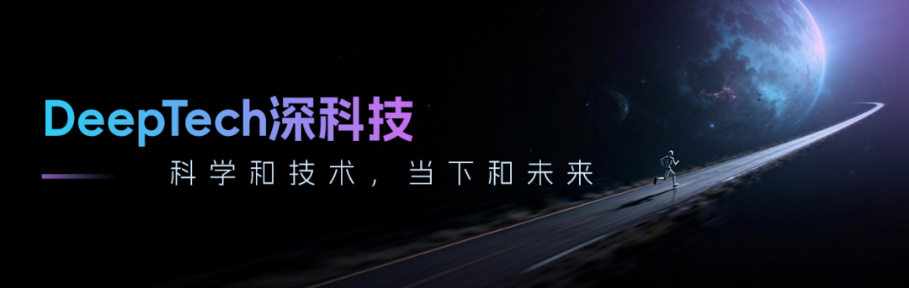
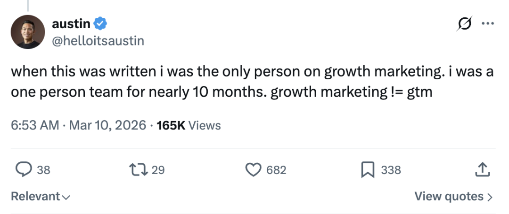
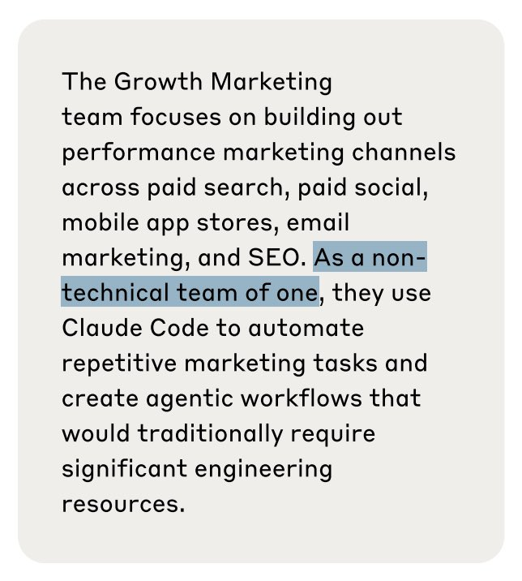
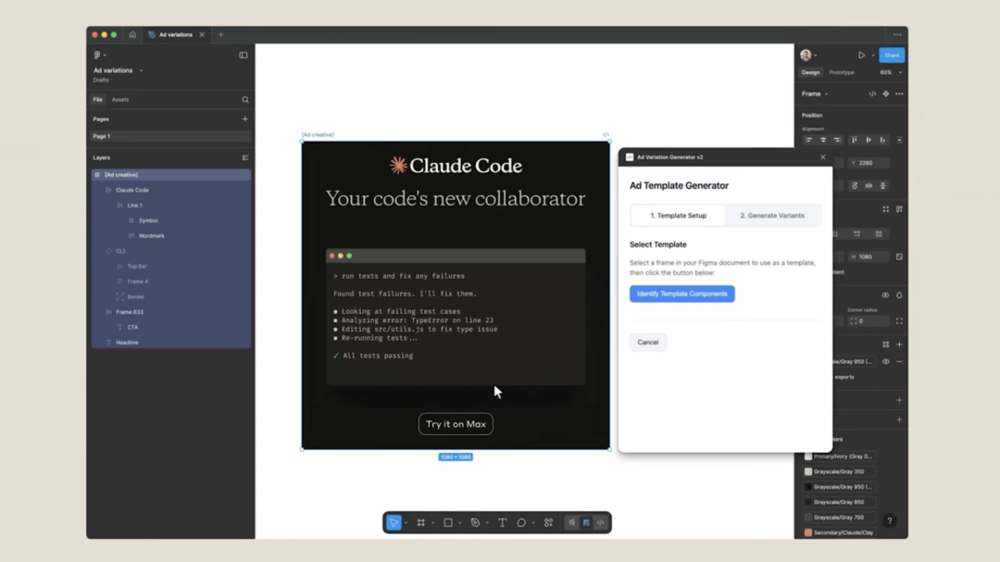

AI 究竟可以将一个人的工作效率提高到哪种程度？
最近，一篇关于 Anthropic 的帖子在社交媒体上引发大量转发。发帖人 Ole Lehmann 称，Anthropic 这家估值达到 3,800 亿美元公司的整个增长营销团队居然只有一个人，一个非技术背景的营销人员，独自负责付费搜索、付费社交、应用商店优化、邮件营销和 SEO，持续了将近十个月。
帖子发出后不久就被评论区质疑，但很快，当事人自己出来确认了。这位名叫 Austin Lau 的增长营销人员回复说：写那篇报道时他确实是唯一一个做增长营销的人，一个人撑了将近十个月。

图丨相关推文（来源：X）
Anthropic 在今年 1 月底发布了一篇官方案例研究，详细介绍了 Austin Lau 的工作方式。同一时期，Anthropic 还发布了一份名为《Anthropic 团队如何使用 Claude Code》的内部白皮书，覆盖了从数据基础设施到法务部门在内的十个团队的使用案例，增长营销是其中之一。
白皮书里写道：增长营销团队专注于付费搜索、付费社交、移动应用商店、邮件营销和 SEO 等渠道，是一个“非技术型的一人团队”，依靠 Claude Code 来自动化重复性营销任务，搭建在传统上需要大量工程资源才能实现的自动化工作流。

（来源：Anthropic）
Austin Lau 不是工程师。他在 Anthropic 官方的案例视频里说过，他“从未写过一行代码”，刚开始接触 Claude Code 的时候，他甚至需要去 Google 搜索“如何在 Mac 上打开终端”。Claude Code 刚发布时，他的第一反应是“完全不知道这个产品是给谁用的”，作为一个市场人，他觉得用途不明显。
转折发生在公司 Slack 群组里有同事分享了一篇面向非技术员工的 Claude Code 安装指南。Austin 出于好奇装上了，一周之后，他搭建了两套完全改变了自己工作方式的自动化流程。
第一套是一个 Figma 插件。做付费社交广告和应用商店营销，需要在 Figma 里处理大量视觉素材。过去的流程是：要为同一个设计方案制作多种文案变体时，他需要手动复制 Figma 中的框架，在 Google 文档和 Figma 之间不停切换，一条条复制粘贴标题。如果有 10 种文案变体需要适配 5 种不同的长宽比，这种机械劳动可以轻松耗掉半个小时。
图丨 Austin Lau（来源：Anthropic）
他把这个痛点用自然语言描述给了 Claude Code，让它帮忙写一个 Figma 插件。过程中他让 Claude Code 参考 Figma 的 API 文档，边研究边做原型。生成的第一版原型并不完美，但作为起点足够了，他在此基础上不断调试，最终做出了一个能用的插件。

（来源：Anthropic）
插件的工作方式是：选中一个静态图片框架，插件自动识别其中的标题、行动呼吁按钮、代码块等组件，然后从一个准备好的文案列表中批量生成独立的 Figma 框架，每个变体对应一套新文案。单次批处理生成最多 100 个广告变体，每批耗时大约半秒。过去 30 分钟的手动操作，现在缩短到 30 秒。
第二套是 Google Ads 的广告文案生成工作流。Google Ads 的响应式搜索广告对标题和描述有严格的字符限制，标题上限 30 个字符，描述上限 90 个字符。过去他需要在 Google 表格里写草稿，手动检查字符数，再把内容逐条贴进 Google Ads 后台。
Austin 在 Claude Code 中创建了一个自定义斜杠命令“/rsa”，触发后 Claude Code 会要求输入投放数据、现有广告文案和关键词，然后交叉引用他事先设定的“Agent Skills”，包含 Anthropic 的品牌调性、产品准确性规范以及 Google Ads RSA 的最佳实践。
系统使用了两个分工明确的子智能体（sub-agent），一个专门写标题，一个专门写描述，各自在各自的字符约束内工作，输出质量比把两项任务塞进单个提示词要高得多。
最终 Claude Code 把 15 条标题和 4 条描述打包成一个可以直接上传到 Google Ads 的 CSV 文件。Austin 强调，生成的文案只是起点，他会逐条评估：价值主张是否到位？语气对不对？和竞争对手有没有区分度？但起码枯燥的初稿生成和格式化工作被彻底自动化了。
这两套工作流的效率提升已经相当惊人，但 Austin 的系统不止于此。他还构建了一个连接 Meta Ads API 的 MCP 服务器（Model Context Protocol）。
通过这个集成，他可以直接在 Claude 桌面应用里查询广告投放表现、花费数据和各条广告的效果，不需要再打开 Meta Ads 的后台仪表盘。“这周哪些广告的转化率最高”“我在哪里浪费了预算”，这类问题可以直接问 Claude，拿到实时数据的答案。
更关键的是闭环。Austin 搭建了一个记忆系统，记录每一轮广告迭代中的假设和实验结果。当他开始新一轮的变体生成时，Claude 会自动调取之前所有测试的数据，哪些文案表现好，哪些不行，让下一轮生成建立在历史实验的基础之上。这个系统在每个周期后都变得更聪明一些。这种跨数百条广告的系统化实验追踪，在传统团队里通常需要一个专职的数据分析师。
从 Anthropic 的白皮书来看，这套工作方式的成果是：广告文案创建从 2 小时压缩到 15 分钟，创意产出量达到原来的 10 倍，他一个人测试的广告变体覆盖的渠道和数量超过了大多数完整规模的营销团队。
在那份白皮书中，增长营销只是十个案例之一。数据基础设施团队用 Claude Code 调试 Kubernetes 集群故障，把原本需要联系网络专家的问题在几分钟内自行解决；推理团队中没有机器学习背景的成员用它来理解模型函数和设定，把查阅文档的时间从一小时压缩到 10 至 20 分钟；产品设计团队直接用 Claude Code 修改前端代码，工程师发现设计师在做“通常你不会看到设计师做的大型状态管理改动”；法务团队有人用一小时就做出了一个给有语言障碍的家人使用的预测文本辅助应用，而他们此前完全没有任何编程经验。
技术和非技术岗位的使用方式不同，但结论一致：Claude Code 正在模糊“能做”和“不能做”之间的边界，而这条边界过去几乎完全由技术能力决定。
Austin Lau 自己在案例中有一句总结，大意是：“‘我希望这个东西存在’和‘我可以亲手把它造出来’之间的距离，比大多数人以为的要短得多。”
当然，需要补充说明的是，增长营销（growth marketing）不等于整个 GTM（go-to-market）。Anthropic 有完整的品牌、产品营销和传播团队，Austin Lau 负责的是效果营销这条线，付费投放、应用商店优化、SEO 这些可量化渠道。
今年 2 月 Anthropic 在超级碗上投了电视广告，那显然不是一个人能搞定的事。他的工作流所依赖的文案和品牌资产，最初也是由产品营销和文案团队协作生产的，Claude 在此基础上做变体生成和规模化测试。
Austin Lau 在 LinkedIn 上最近补充了一些背景。他指出，那篇被广泛传播的文章描述的是 2025 年第二季度他作为唯一增长营销人员的经历，距今已经快 8 个月了。团队后来确实扩充了人手，尽管规模仍然比外界想象的小得多，用他的话说，“我们的战斗力远超我们的人数”。
即便如此，信号足够强烈。一家投后估值 3,800 亿美元、年化收入 140 亿美元的公司，在增长最快的阶段，让一个没写过代码的营销人员独自管理核心增长渠道长达十个月，效果还不错。这应该已经能够证明，AI 对知识工作者的能力放大倍数，可能比我们目前的组织架构和招聘惯性所假设的要大得多。
只是这种模式能在多大范围内复制，目前还不清楚。增长营销高度数据化、流程化、API 友好，天然适合自动化。换成需要更多人际判断或创意直觉的领域，情况也可能很不一样。
Anthropic 的白皮书在增长营销章节末尾给出了三条建议：寻找有 API 接口的重复性工作流进行自动化；把复杂流程拆分成多个专门的子代理，而非试图用单一提示词包揽一切；在动手写代码之前，先在 Claude 上充分思考整体流程设计。这三条建议本质上是在说明，效率的瓶颈往往不在技术能力，而在于你是否愿意花时间把自己的工作流拆解清楚，然后把其中可以被机器接管的部分交出去。
参考资料：
1.https://www-cdn.anthropic.com/58284b19e702b49db9302d5b6f135ad8871e7658.pdf
2.https://www.youtube.com/watch?v=Jp83_JMK74o
运营/排版：何晨龙